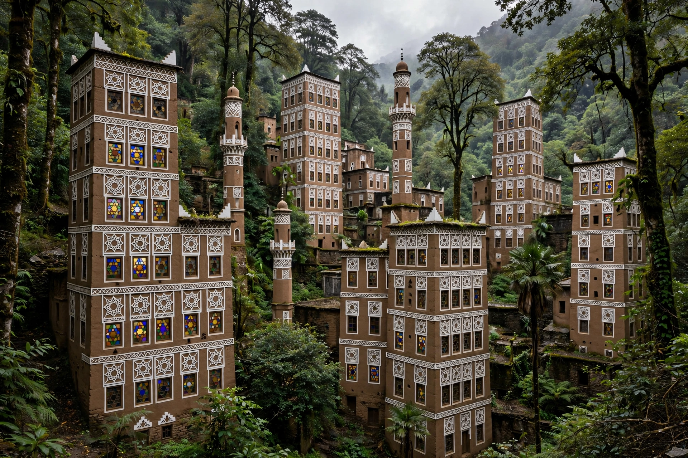

[Image placeholder: The tower-houses of Sanaa's Old City]| Country | Yemen |
|---|---|
| Population | About 3 million (metro estimates) |
| Elevation | About 2,300 m |
| Old City | UNESCO World Heritage Site since 1986 |
**Sanaa** is the capital and largest city of Yemen, in the mountains of the country's northwest at about 2,300 m. One of the oldest continuously inhabited cities in the world, its old city is famed for hundreds of tower-houses of rammed earth and burnt brick, decorated with white gypsum tracery (qamariya windows) — architecture found nowhere else, recognised by UNESCO.
Legend attributes Sanaa's founding to Shem, son of Noah. The Great Mosque of Sanaa, among Islam's oldest, yielded in 1972 the Sanaa manuscripts, some of the earliest Qur'an fragments known. Sanaa became the imamate's capital, then of North Yemen, then of unified Yemen in 1990. Since 2014 the city has been held by the Houthi (Ansar Allah) movement and bombed in the Saudi-led intervention; its population endures economic collapse and cholera amid the wider civil war, though the old city's fabric has largely survived.
Within the (partly rebuilt) walls stand over 6,000 houses built before the eleventh century in some cases, souqs selling jambiya daggers, silver and spices, and bathhouses (hammams). Bab al-Yaman, the great southern gate, is the city's symbol.